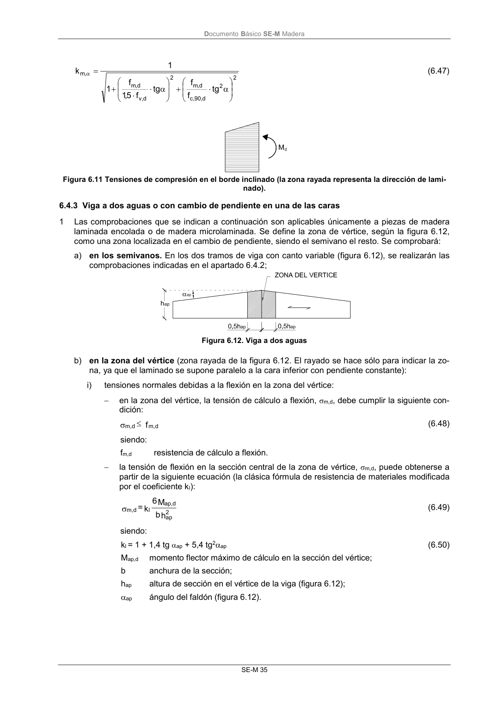

DB-SE-M · 6.4.2 Vigas de canto variable y caras sin cambio de pendiente · versión 2019-12-20 · capa oficial
Formatos: JSON compacto · Markdown · PDF fuente
Ámbito del documento · texto del ámbito · documento y tablas
ID técnico a0088 · PDF pág. 40-41 · jerarquía no validada por persona · contrastado con el literal de la página 40 (candidato tipográfico); no validado por persona · padre: a0086
6.4.2 Vigas de canto variable y caras sin cambio de pendiente 1 En estas vigas (figura 6.9) se presentan, en las secciones transversales al borde horizontal (borde paralelo a las láminas) leyes de distribución de tensiones normales debidas a la flexión que no son lineales. También las propiedades resistentes están afectadas por el desvío de la fibra en el borde inclinado. Figura 6.9 Viga a un agua (Se llama borde paralelo a la cara que marca la direccion del laminado, e inclinado al opuesto, bajo la consideración de que se mantiene el sistema de laminación. Existen otras formas de la- minación, pero no se contemplan en este Documento Básico) 2 En las fibras extremas las tensiones de cálculo a flexión en el borde paralelo y en el inclinado con relación a la dirección de la fibra, m,0,d y m,,d , respectivamente, deben cumplir las condiciones si- guientes: f d m, d , 0 m, en borde paralelo respecto a la dirección de la fibra (6.44) f k , m d m, d , m, en borde inclinado respecto a la dirección de la fibra (6.45) siendo: fm,d resistencia de cálculo a flexión; km, coeficiente definido a continuación. si las tensiones son de tracción (figura 6.10), 2 2 d , 90 ,t d , m 2 d , v d , m , m tg f f tg f 75 ,0 f 1 1 k (6.46) Figura 6.10 Tensiones de tracción en el borde inclinado (la zona rayada representa la dirección de laminado) si las tensiones son de compresión (figura 6.11), DocumentoBásico SE-M Madera SE-M 35 2 2 d, 90 ,c d , m 2 d, v d , m , m tg f f tg f 5,1 f 1 1 k (6.47) Figura 6.11 Tensiones de compresión en el borde inclinado (la zona rayada representa la dirección de lami- nado).

PDF fuente redistribuible: copia fiel enlazada en esta página (SHA256 verificado).